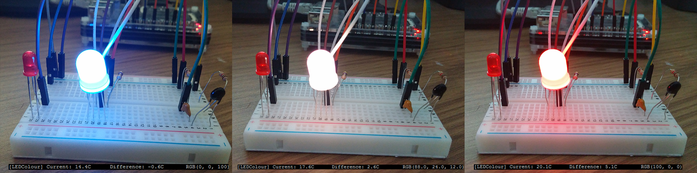

Food waste Reduction with Intelligent Decisions Generating Energy Savings
Introduction
About
The project is to create a product using an Arduino and/or Raspberry Pi that will be a part of the Internet of Things. The Internet of Things is about taking everyday objects and embedding them with software, electronics and networking capabilities so that they can sense the environment around them and then send and receive data. The idea, after much thought and discussion will be to create a smart fridge. This idea will not only have a physical benefit to its application but also an environmental one, as from the start, the design is centred on trying to reduce food waste and energy consumption.
Motivation
According to statistics from LoveFoodHateWaste (a website run by WRAP - Waste and Resources Action Programme) UK households throw away 7 million tonnes of food every year. One of the main reasons for this is not using the food before it goes out of date. The average cost per household of this food wastage is £470 per year.
Leaving the fridge door open for extended periods of time is a waste of electricity, not only can this quickly raise the temperature of the fridge but it is estimated by Home Energy Magazine, that about 7% of a fridge's energy consumption is caused by opening the door. The Institute of Food and Agricultural Sciences at the University of Florida has stated that opening the fridge door for extended periods of time, can lead to the wastage of anywhere from 50-120kWh a year, a substantial amount of energy. The average cost of a kWh in the UK is 15.5p (September 2015 tariffs). This means wasting the higher end of the benchmark, 120kWh, costs the household £18.60 a year (120kWh * 15.5p).
Goal
The goal of the fridge is to work in tandem with the user to help reduce food waste and electricity consumption. In order to do this, the fridge will keep track of each item of food the user owns. This information can be accessed remotely, so the user can check what items they have in stock. Therefore they will not buy additional items they already have, lessening the need to throw out excess unused food. Due to the individual user logins on the system, each user of the fridge has only their own items attached to their account.
To reduce electricity consumption, the temperature sensor will notify the user if they have left the fridge door open for too long. There is also a door sensor in case the user walks away and doesn't shut the door properly. In order to cool the fridge back to its normal operating temperature, the fridge will be required to use extra electricity it wouldn't have to use, if the door was open for less time.
User Guide
Barcode Scanning
When an item is placed in the fridge, the barcode can be scanned and its best-before date recorded. In order to do this, select the "Barcode Scanner" option using the touchscreen. Then hold the barcode up to the Pi Camera. This will scan the barcode and store it. Select the product if it appears in the product list that will be generated, otherwise it can be manually added to the database so that it will be remembered for next time. Once this is done, the best-before date can be entered. This means, the fridge will know when each item of food in the fridge will be nearing its best-before date, and will display the food that is going out of date soon on the home menu of the touchscreen. Please note that only products that Tesco Groceries sells will be able to be scanned.
Step by Step Guide for Barcode Scanning
1. If not already done so, log in to the fridge. Enable Pi camera on touchscreen interface, pick up camera and hold it up to barcode using the display on the touchscreen to aid you.
2. If successfully scanned, product information should appear on the screen, if not manually add this information. Add the best before date to the product.
3. Place product in fridge.
Removing Items
When removing an item from the fridge, find the product on the list and click the remove button. This product will then be removed from the list of products.
Temperature Reading
The thermometer takes constant readings of the temperature inside the fridge. An LED will change colour based on the current temperature of the fridge. Blue indicates a normal (or lower) operating temperature. This will transition to green then red as the temperature rises above normal. This willl most likely be an indicator that the fridge door has been left open and the fridge will have to use more energy to bring the temperature back down to the normal operating temperature.
Open Door Status
The status of the door (i.e. whether it is open or closed) is indicated on the page.
Stock Count
Select the "Stock" menu on the touchscreen to be given a display of what is currently in the fridge and how much of each item there is.
Technical Manual
Web Server
We decided to use a Web-based approach for our interface. The Pi itself hosted the Web Server. This meant we only had to write the client application once, meaning it could be accessed from the touchscreen, a phone or desktop without client applications having to be written for each.
We originally planned to serve the content using Flask, a Python web server. This would have given us the advantage of being able to run all of our Python components directly from the server, reducing overhead. We encountered great difficulties in getting this to work, and as a result reverted back to using Apache, with which we were more familiar. The end result is that we have PHP scripts that access and manipulate the database. We independently have a Python script running that dumps all the relevant information about the state of the system such as temperature, door open status, etc. into a JSON file. The client uses AJAX to periodically fetch this JSON file, which it then parses and is used to render/update the page.
Interface
The interface for the touchscreen attached to the fridge was written in HTML, Javascript and CSS3. The interface consisted of a Home Screen which displayed the current temperature of the fridge and the items that are to expire soon. There is also an "Add Item" menu, which brings up the display from the barcode scanner, and a "Date Entry" menu. When an item is added via the interface, the back-end of the system updates the database to include the new item.
Barcode Scanning
The barcode scanner uses a camera which is attached to a Raspberry Pi. The camera scans for barcodes every fraction of a second. We used Zbar to recognize and parse barcodes in the images. Zbar had unfortunate performance problems, in that the built-in viewfinder only updated as fast as the barcode search worked - it was singly threaded. This meant that the limited performance available from the Pi only allowed the viewfinder to update at about 1-2 frames per second. This made it quite frustrating to try and scan barcodes, therefore a workaround had to be found. The first approach was to hide Zbar's viewfinder and start our compiled "ffplay" on another core to be the viewfinder. Unfortunately, the /dev/video0 device can only be opened by one program at a time. The solution to this was to compile a module called v4l2loopback, which can be used to create a virtual video device on /dev/video1 that can be opened multiple times. We compiled ffmpeg and used it to copy the video stream from /dev/video0 to /dev/video1. The result is that zbar and ffplay can both open the device, and the viewfinder can run at 30fps.
For the barcode lookup that maps barcodes to products, the plan was originally to use Outpan, which is a web service that provides an API for identifying products from their GTIN. However, Outpan didn't seem to recognise many products, so we decided to use TescoLabs instead. One disadvantage of this is that it limits us to using products sold from Tesco only, but for the purposes of the project this was not a problem. Using the Python code, a simple HTTP request could be made with the detected barcode and information on the current product would be returned.
Temperature Reading
In order to detect the temperature of the fridge, a Raspberry Pi was connected to a bread board which housed a range of devices. The most notable of these were the thermistor and an RGB LED. As a thermistor's resistance changes based on the current temperature, we set up the LED to change colour based on the current resistance of the thermistor. If the resistance is above the threshold temperature, the LED will turn red. Otherwise it will remain blue. The code to allow this to happen was written in Python, modified from a script written by Simon Monk for his "Raspberry Pi Starter Pack". The program worked by measuring the amount of time taken for a 300nF capacitor (using the variable resistance from the thermistor) to empty. The temperature of the fridge affected the resistance of the thermistor. The higher the temperature, the higher the resistance and the longer the capacitor takes to empty.
Open Door Alert
We wanted a method of checking whether the door is opened or closed. We decided to attach a magnet to the door. A Hall effect sensor was used to check for the presence of the magnetic field. When the field is present, the sensor's output pin is pulled low, and the door is therefore closed. When the door is opened, the magnet attached to the door is moved away from the hall effect sensor mounted on the chassis, which causes the sensor's output pin to go high.
We used the RPi.GPIO library to access the GPIO pins on the pi. We connected the hall effect sensor's signal pin to GPIO 3, and used this pin to get the state of the door.

In order for the software on the Pi to access the hardware used, we utilised the RPi.GPIO library to allow access to the GPIO pins on the board.
Final Project Plan
Paul McGurk
Paul's contribution
Daniel Rafferty
Current Progress & Group Organisation for initial Phase 1 Report submission.
Set up web-server, first with Apache then Flask, before reverting back to Apache.
Worked with Scott to:
- Set up MySQL and PHPMyAdmin for Databases.
- Created and maintained User and Products tables.
- Used JS, PHP and Python to populate database from user input.
- Worked on Motivation, Goals and User Guide for final website report.
Alex McBride
Alex's contribution
Andrew Mortimer
Worked with Alex on the Hall effect sensor code in Python and integrated this onto the Pi.
Wrote a large portion of the final report.
Scott Henderson
Worked alongside Daniel to create and manage the database.
Retrieved and displayed the items on the touchscreen interface from the database in JavaScript.
Added the scanned products from TescoLabs to the database in Python using MySQL.
Added some sections and fleshed out parts of the report.